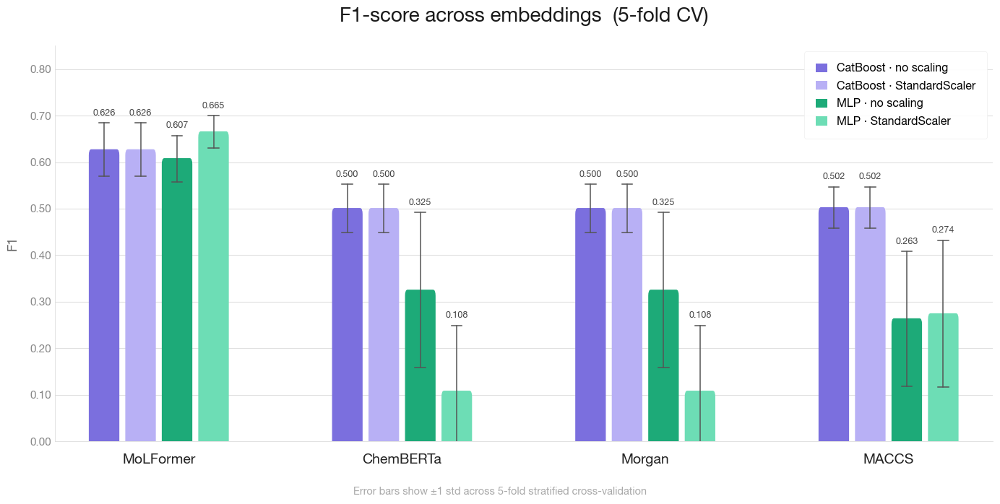

Aptos и Segoe UI на одинаковом графике
Данные, палитра и размер макета одинаковы. Для новой версии статьи выбран Aptos; Kimi и Claude предпочли его при визуальном ревью. Нажмите на изображение, чтобы открыть его в полном размере.
Ваш исходный SI: ориентир по оформлению

На новых графиках оставлены короткие обозначения. Численность, усреднение по seeds, медианы/IQR, зависимости endpoints и цензурированное измерение описаны в captions и таблицах SI.